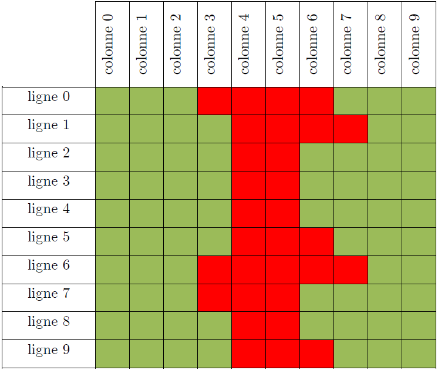
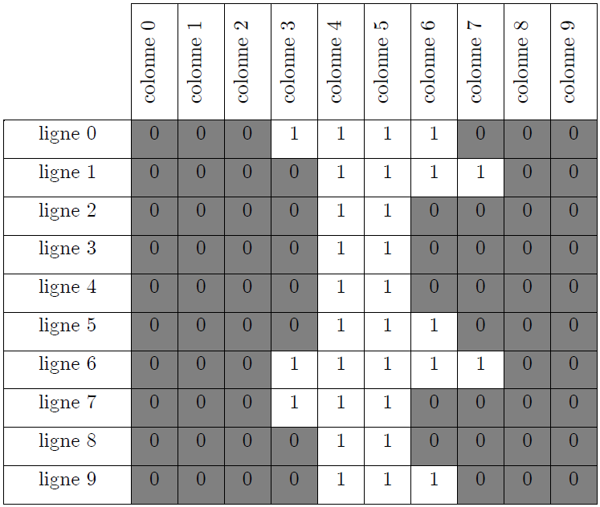

Phase 1 : Seuillage du niveau de rouge
Objectif de cette phase
L’objectif de cette phase est de seuiller le niveau de rouge de l'image.
Question 1
Proposer une fonction etape1_seuillage()permettant de seuiller l'image issue de la caméra :
1 2 3 4 5 6 7 8 9 | |
Explications
A présent, l’image issue de la caméra doit être seuillée :

Après seuillage du niveau de rouge, l’image est constituée uniquement de couleur blanche et noire.
La zone blanche correspond à la zone où la couleur rouge était présente.
Le reste devient noir.
Voici un zoom sur une petite portion de l’image issue de la caméra APRES seuillage du niveau de rouge :
